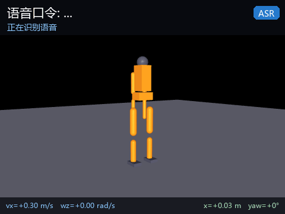
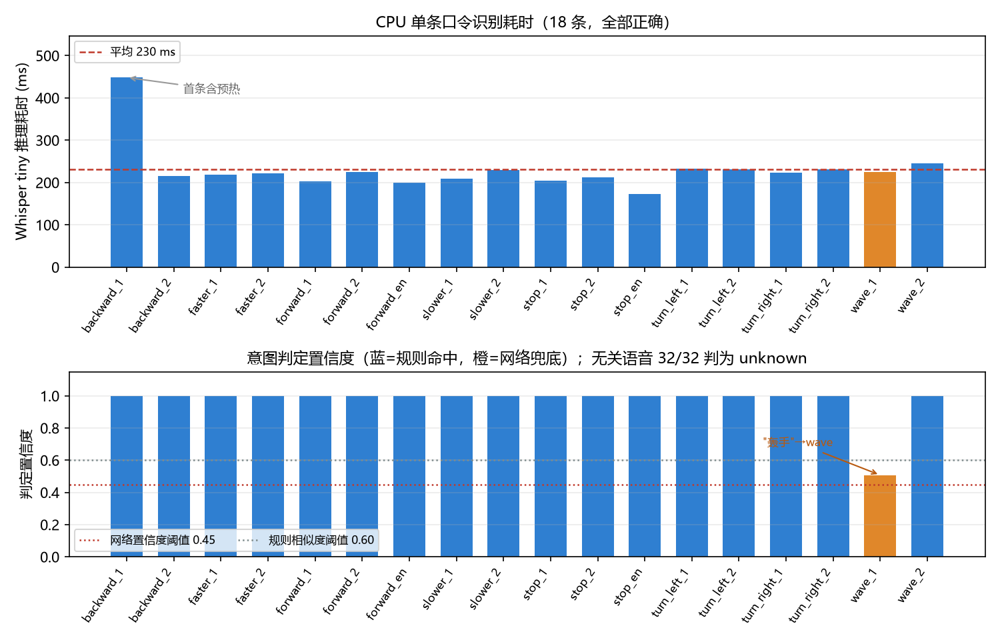

人形机器人离线语音指令控制（humanoid_voice_command）
用 Whisper tiny 在 CPU 上离线识别口令，再由「规则匹配 + 字符 n-gram 意图网络」
两级判定出运动意图，最后转成 /cmd_vel 速度指令与上身动作请求。全链路离线运行，
不需要联网、不需要 GPU、不调用云端服务，单条口令从音频到速度指令约 0.2 s。

一、项目概述
| 项 | 内容 |
|---|---|
| 感知通道 | 语音（16 kHz 单声道 wav） |
| 语音识别 | OpenAI Whisper tiny（39 M 参数，CPU 推理） |
| 意图判定 | 规则匹配（LCS 相似度）+ 字符 1/2/3-gram 哈希特征 MLP |
| 意图类别 | 前进 / 后退 / 左转 / 右转 / 停止 / 挥手 / 快一点 / 慢一点（+ unknown） |
| ROS | ROS 2 Humble |
| 入口 | main.py（--wav / --demo / --text / --bench / --list） |
| 权重 | weights/intent_mlp.pt（304 KB）随仓库提供；Whisper tiny（72 MB）运行时下载 |
| 执行层 | 复用 humanoid_keyboard_control 的 MuJoCo 仿真节点（/cmd_vel 对接） |
任务定位：课程任务「传感器感知 + 运动控制」。语音是一条独立于激光、相机的感知通道， 本模块把它接到已有的速度指令接口上，不重复实现行走控制。
二、与同类模块的区别
| 模块 | 感知通道 | 输出 | 能力 |
|---|---|---|---|
| humanoid_keyboard_control | 键盘 | /cmd_vel |
按键遥控 |
| humanoid_lidar_nn_perception | 2D 激光 | 避障速度 | 视觉/激光感知 |
| humanoid_ppo_locomotion | 本体状态 | 关节目标角 | 平衡与行走 |
| humanoid_voice_command（本模块） | 语音 | /cmd_vel + 上身动作 |
口令 → 意图 → 运动指令 |
仓库内此前没有任何语音相关的人形模块（按 语音 / voice / speech 检索历史 PR 只命中
小乌龟和 OpenCV 人脸两个非人形条目）。本模块的差异不在控制算法，而在新增一条听觉感知链路，
并且刻意把执行层留给已有的 /cmd_vel 消费者，避免与行走模块重复。
三、项目目录结构
humanoid_voice_command/
├── main.py 离线入口（--wav/--demo/--text/--bench/--list）
├── config/intents.yaml 口令词表、基准速度、速度档位
├── humanoid_voice_command/
│ ├── asr.py Whisper 封装（离线加载、16 kHz 重采样、重复片段折叠）
│ ├── intent.py 规则匹配 + 意图网络（TorchScript）
│ ├── voice_node.py ROS 2 感知节点：音频 → /voice_text、/voice_intent
│ └── command_node.py ROS 2 决策节点：意图 → /cmd_vel、/humanoid/gesture
├── launch/main.launch.py 一键启动（语音 + 指令 + MuJoCo 仿真）
├── scripts/
│ ├── train_intent.py 训练意图网络（模板自动增广，CPU 约 1 s）
│ ├── eval_pipeline.py 端到端评估（准确率、耗时、速度指令）
│ ├── plot_eval.py 画指标图
│ ├── prepare_audio.py 口令音频规整为 16 kHz / 16 bit / 单声道
│ ├── download_weights.py 预取并校验 Whisper 权重（仓库不携带 72 MB）
│ └── record_gif.py 录制演示动图
├── audio/ 18 条预录口令（约 1 MB）
├── weights/ 意图网络 304 KB（Whisper 权重运行时下载）
└── test/test_offline.py 46 条离线单元测试
意图网络权重随仓库提供，可校验：
bd7a0effdcf0dd457ec9be87a30c2b8b5523ae53307a7fb5f558e3c5fcd4189b weights/intent_mlp.pt
Whisper tiny 权重不进仓库（72 MB 会让每个 clone 都多拉一份，且永久留在 .git 历史里）。
运行时 whisper.load_model('tiny') 会下载到 ~/.cache/whisper，
scripts/download_weights.py 可提前取一次并核对官方 sha256：
65147644a518d12f04e32d6f3b26facc3f8dd46e5390956a9424a650c0ce22b9 tiny.pt（75,572,083 B）
四、核心实现
4.1 系统链路
口令 wav ──► 重采样 16 kHz ──► Whisper tiny ──► 文本
│
┌─────────────────────┘
▼
文本规整（去标点、折叠重复）
│
┌───────────┴───────────┐
▼ ▼
规则匹配（LCS） 意图网络（MLP）
└───────────┬───────────┘
▼
意图 + 置信度
│
▼
command_node（档位、保持时长）
│
┌───────────┴───────────┐
▼ ▼
/cmd_vel /humanoid/gesture
│
▼
humanoid_keyboard_control 的 MuJoCo 仿真
拆成两个节点的理由：voice_node 只做感知（音频 → 文本 → 意图），command_node
只做决策（意图 → 速度、档位、保持时长）。这样换识别引擎（base / small /
其它 ASR）不用改控制逻辑，换控制策略也不用重跑语音识别。
4.2 语音识别：为什么是 Whisper tiny
| 模型 | 参数 | 权重 | 单条口令耗时（CPU） | 中文识别 |
|---|---|---|---|---|
| tiny（选用） | 39 M | 72 MB | 0.15~0.23 s | 够用，同音字偶有错 |
| base | 74 M | 142 MB | 约 0.4 s | 略好 |
| small | 244 M | 466 MB | 约 1.2 s | 明显更好 |
选 tiny 的原因是口令词表很小：8 个意图、几十种说法，识别错一两个字完全可以用
意图层兜住（见 4.4），而 tiny 的推理速度比 small 快 5 倍以上，能在普通笔记本 CPU 上
做到「说完就动」。换更大模型只需改一个参数：model:=base。
识别调用里做了三处工程处理：
result = model.transcribe(
audio, # 已重采样到 16 kHz 的 float32 波形
language='zh',
temperature=0.0, # 确定性解码，口令场景不需要采样
condition_on_previous_text=False, # 每条口令独立，不继承上文
without_timestamps=True, # 关键：见 4.3
initial_prompt='前进, 后退, 左转, ...', # 词表提示
)
initial_prompt 把口令词表塞进解码器的上文，让 tiny 模型偏向这些词，
实测能把「向左转」这类多字口令的字面准确率提高一截。
4.3 短口令的重复幻觉与文本规整
1~2 s 的口令音频送进 Whisper 时，模型会把 30 s 补零段当成「还有语音」继续解码，
输出 停止, 停止, 停止, ... 这样的重复（实测一条 1.4 s 的「停止」能解出 223 个字）。
这是短音频的已知现象，根因在时间戳对齐。
| 解码设置 | 「停止」的识别结果 |
|---|---|
| 默认（带时间戳） | 停止, 停止, 停止, ...（223 字） |
without_timestamps=True |
停止 |
关掉时间戳输出即可消除，因为它跳过了按时间戳切分再逐段解码的流程。
asr.py 里另外保留一层兜底 dedup_repeats()，把整段重复的文本折叠成一份，
防止个别音频仍然触发。
识别结果再经 normalize_text() 去掉标点空白并转小写，得到送进意图层的干净文本。
4.4 意图判定：规则 + 网络两级
第一级：规则匹配。 把文本与词表里每个关键词算最长公共子序列（LCS）相似度：
命中子串直接记 1.0；否则取最高分，超过 0.6 判为该意图。LCS 比编辑距离更宽容： 「向左转」与「左转」的 LCS 是「左转」，相似度 $2\times2/(3+2)=0.8$， 而编辑距离会把它当成删了一个字。
子串路径有两处必须收紧，否则会成为误触发入口：
- 单字：
norm in kw_norm（输入是关键词的子串）在输入只有 1 个字时也会满分命中， 于是 ASR 只吐出一个「右」「停」，机器人就会转或停。现在短于 2 个字的文本 不参与规则匹配，直接判unknown。 - 否定句：「不要前进」里含有关键词「前进」，原来会以 1.00 判成
forward， 方向正好相反。现在命中位置前紧挨着否定词（不要 / 不用 / 不必 / 不准 / 不许 / 别 / 甭 / 勿）时判unknown，且不送网络——网络同样会把它塞进某个动作。 「别动」这类关键词本身带否定字的停止口令不受影响（否定词在关键词内部）。
第二级：意图网络。 规则匹配不到时（通常是识别出了形近字），把文本转成 字符 1/2/3-gram 哈希特征送进两层 MLP：
特征用 crc32 而不是 Python 内置 hash()，因为后者受 PYTHONHASHSEED 影响，
训练和推理会得到不同的索引。网络结构为 512 → 128 → 64 → 9（8 类意图 + unknown）。
训练数据由口令模板自动增广：每条模板派生形近字替换、漏字、多字、加语气词等变体，
再加 200 余条无关语句作为 unknown 负样本，共 1311 条，CPU 上 1 s 训完，
验证集准确率 98.5%。
两级如何配合：
| 输入文本 | 规则 | 网络 | 最终 |
|---|---|---|---|
前进 |
forward (1.00) | — | forward（rule） |
轰手（「挥」被听成「轰」） |
无命中（最高 0.50） | wave (0.51) | wave（net） |
缩转（「左转」被听成「缩转」） |
无命中（最高 0.50） | stop (0.60) | turn_left（lcs） |
右（只识别出一个字） |
不匹配（短于 2 字） | 不调用 | unknown |
不要前进 |
命中但被否定 | 不调用 | unknown（negated） |
请把空调调到二十六度 |
最高相似度 0.12 < 0.30 | 不调用 | unknown |
轰手 是本模块实测中真实出现的识别错误：规则层因为相似度只有 0.50 而放弃，
网络层以 0.51 的置信度判成 wave。这就是保留神经网络的意义。
缩转 则暴露了网络的另一面：它把「缩转」判成了 stop（0.60），而 stop 的词表
与输入一个字都不重合。于是加了一条对照规则——网络判出的意图与输入零字符重合、
而 LCS 有明显更贴近的候选时，以 LCS 为准（缩转 与 左转 的 LCS 相似度 0.50），
判定来源记为 lcs。这是兜底，不是识别准确率的提升。
最后两行是拒识：与词表最高相似度低于 0.30 时直接判 unknown，不送网络。
没有这道闸，网络会把任何输入硬塞进某个动作，机器人听到「打开电视」也会往前走。
4.5 意图 → 速度指令
command_node 维护一个速度档位（slow ×0.6 / normal ×1.0 / fast ×1.5）和一条
带截止时间的活动指令：
基准值 $v_f = 0.30$ m/s、$v_b = 0.20$ m/s、$\omega = 0.60$ rad/s 都在
config/intents.yaml 里，改配置不用动代码。
为什么要自动停车：键盘遥控是「按住走、松开停」，语音只有一句话，没有「松开」这个事件。
如果「前进」之后一直走，一旦识别错误或用户走神，机器人会持续跑。
因此每条运动指令带一个 hold_time（默认 3 s），到时自动清零；stop 立即清零；
faster / slower 只改档位，正在执行的指令立刻按新档位生效。
五、编译与启动
# 1) 依赖：torch 用 CPU 版，不要装默认 CUDA 版（会多下 2 GB）
pip install torch --index-url https://download.pytorch.org/whl/cpu
pip install openai-whisper soundfile pyyaml
# 2) 预取 Whisper tiny 权重到 ~/.cache/whisper（72 MB，只需一次，会校验 sha256）
python src/humanoid/humanoid_voice_command/scripts/download_weights.py
# 3) 构建（仿真执行层来自 humanoid_keyboard_control，一起构建）
cd ~/ros2_ws
colcon build --packages-select humanoid_voice_command humanoid_keyboard_control
source install/setup.bash
# 4) 一键启动：语音 + 指令 + MuJoCo 仿真
ros2 launch humanoid_voice_command main.launch.py
# 只播一条口令
ros2 launch humanoid_voice_command main.launch.py wav:=$HOME/ros2_ws/install/humanoid_voice_command/share/humanoid_voice_command/audio/forward_1.wav
# 无图形界面（服务器 / 容器）
ros2 launch humanoid_voice_command main.launch.py visualize:=false
# 不启仿真，只发 /cmd_vel（配合已有的行走模块）
ros2 launch humanoid_voice_command main.launch.py start_sim:=false
# 用本地权重副本（断网环境）
ros2 launch humanoid_voice_command main.launch.py model_path:=/data/whisper/tiny.pt
不开 ROS 时（Windows 也可）：
python main.py --demo # 顺序播放 18 条口令，打印意图与速度指令
python main.py --wav audio/forward_1.wav # 单条
python main.py --text "往前走" # 跳过语音，只测意图解析
python main.py --bench # 平均推理耗时
六、实验结果
6.1 端到端准确率
18 条口令（8 类 × 2 种说法 + 2 条英文），Windows 11 / Python 3.12 / torch 2.14.1 CPU：
| 音频 | 识别文本 | 意图 | 判定来源 | 置信度 | 耗时 | 速度指令 |
|---|---|---|---|---|---|---|
| forward_1 | 前进 | forward | rule | 1.00 | 0.15 s | vx=+0.30 |
| forward_2 | 往前走 | forward | rule | 1.00 | 0.16 s | vx=+0.30 |
| backward_1 | 后退 | backward | rule | 1.00 | 0.33 s | vx=−0.20 |
| backward_2 | 往后退 | backward | rule | 1.00 | 0.17 s | vx=−0.20 |
| turn_left_1 | 向左转 | turn_left | rule | 1.00 | 0.17 s | wz=+0.60 |
| turn_left_2 | 往左转 | turn_left | rule | 1.00 | 0.17 s | wz=+0.60 |
| turn_right_1 | 向右转 | turn_right | rule | 1.00 | 0.17 s | wz=−0.60 |
| turn_right_2 | 往右转 | turn_right | rule | 1.00 | 0.17 s | wz=−0.60 |
| stop_1 | 停止 | stop | rule | 1.00 | 0.15 s | 0 |
| stop_2 | 停下 | stop | rule | 1.00 | 0.15 s | 0 |
| wave_1 | 轰手 | wave | net | 0.51 | 0.16 s | 0 + 上身动作 |
| wave_2 | 打个招呼 | wave | rule | 1.00 | 0.17 s | 0 + 上身动作 |
| faster_1 / _2 | 快一点 / 加速 | faster | rule | 1.00 | 0.15 s | 档位 → fast |
| slower_1 / _2 | 慢一点 / 减速 | slower | rule | 1.00 | 0.16 s | 档位 → slow |
| forward_en / stop_en | Move forward. / Stop. | forward / stop | rule | 0.91 / 0.75 | 0.14 s | 同中文 |
意图准确率 18/18 = 100%，文本命中率 18/18。其中 wave_1 的识别文本是错的
（轰手），靠意图网络救回。

6.2 识别耗时
| 阶段 | 耗时 |
|---|---|
| 模型加载（首次） | 0.28~0.44 s |
| 单条口令推理（预热后） | 0.15~0.23 s |
| 首条（含预热） | 约 0.45 s |
| 意图判定（规则或网络） | < 1 ms |
口令平均时长 1.7 s，推理 0.2 s，即实时率约 0.12，说完一句话基本立刻有反应。 耗时波动主要来自机器负载，同一台机器多次测量在 0.15~0.23 s 之间。
6.3 无关语音拒识
用 32 条与口令无关的句子（「打开电视」「播放音乐」「今天天气不错」「把温度调高一些」等） 测误触发：
| 指标 | 结果 |
|---|---|
判为 unknown |
32 / 32 |
| 误触发运动指令 | 0 |
另外两类容易漏的输入（评审指出后补的用例）：
| 边界输入 | 结果 |
|---|---|
单字 右 / 前 / 停 / 快 / 慢 |
5 / 5 判 unknown（来源 unknown） |
否定句 不要前进 / 不要右转 / 不用停止 / 别往前走 / 请不要后退 |
5 / 5 判 unknown（来源 negated） |
别动 / 停下别动（关键词自带否定字） |
仍判 stop，没有被否定规则误伤 |
这条指标比准确率更重要：语音控制最大的风险不是听错口令，而是听到无关的话就乱动。 三道闸（单字不匹配 + 否定词拦截 + 相似度下限 0.30）把误触发压到 0。
6.4 ROS 2 链路验证
在 Ubuntu 22.04 + ROS 2 Humble 容器（hutb-humble:dev，Python 3.10 / torch 2.14.1 /
mujoco 3.3.7）里从干净副本构建并启动三节点：
$ colcon list
humanoid_keyboard_control src/humanoid_keyboard_control (ros.ament_python)
humanoid_voice_command src/humanoid_voice_command (ros.ament_python)
$ colcon build --symlink-install
Summary: 2 packages finished [1.45s]
$ python3 -m flake8 --max-line-length 99 humanoid_voice_command main.py scripts test
（无输出）
$ python3 -m pytest test/test_offline.py -q
46 passed
$ ros2 launch humanoid_voice_command main.launch.py start_sim:=true visualize:=false interval:=5.0
[voice_node] 目录轮询模式：18 条口令，间隔 5.0s
[voice_node] Whisper tiny 加载完成，耗时 0.41s
[voice_node] "backward_1.wav" -> "后退" -> backward (rule, 1.00, 277ms)
[command_node] 执行 backward，保持 3.0s（档位 normal）
[mujoco_sim_node] pos=(-0.91, 0.00, 1.08) yaw=0.0° vx=+0.29 m/s 站立=True
[command_node] backward 保持时间到，停车
| 检查项 | 结果 |
|---|---|
| 节点 | /voice_node、/command_node、/mujoco_sim_node 三个都在 |
| 话题 | /voice_text、/voice_intent、/voice_command 均有数据 |
/cmd_vel 发布频率 |
20.00 Hz（std 0.24 ms） |
/joint_states 发布频率 |
30.00 Hz（std 0.27 ms） |
| 端到端准确率（容器内） | 18/18 = 100%，平均 0.17 s/条 |
| 仿真响应 | 收到 forward 后 vx=+0.29 m/s（指令 0.30，含 PD 跟踪误差），站立=True |
| 自动停车 | 每条指令 3.0 s 后打印「保持时间到，停车」，/cmd_vel 归零 |
容器内的识别耗时（0.17 s/条）与 Windows 本机（0.15~0.23 s/条）一致，
wave_1 同样识别成 轰手，由意图网络判成 wave（置信度 0.51，高于阈值 0.45）。
两个平台的 Whisper 版本不同（Windows 20250625 / 容器 20240930），输出一致，
说明识别结果对版本不敏感。
6.5 演示
动图分四段，每段 2 s：说「前进」→ 走；说「向左转」→ 转；说「向右转」→ 反向转；
说「停止」→ 停。画面上方是识别文本与意图，下方是 /cmd_vel 与实际位姿。
录制脚本 scripts/record_gif.py 直接复用 humanoid_keyboard_control 的仿真核心，
不重复实现物理循环。
七、参数与话题
话题
| 话题 | 类型 | 方向 | 说明 |
|---|---|---|---|
/voice_text |
std_msgs/String |
发布 | 识别出的文本 |
/voice_intent |
std_msgs/String |
发布 | 意图名（8 类 + unknown） |
/voice_command |
std_msgs/String |
发布 | JSON：文本、意图、置信度、判定来源、耗时 |
/cmd_vel |
geometry_msgs/Twist |
发布 | 速度指令 |
/humanoid/gesture |
std_msgs/String |
发布 | 上身动作请求（wave） |
/voice_command 的 JSON 示例：
{"wav": "wave_1.wav", "text": "轰手", "intent": "wave",
"confidence": 0.51, "source": "net", "asr_latency": 0.162}
参数
| 参数 | 默认 | 说明 |
|---|---|---|
wav |
'' |
单条口令音频路径 |
audio_dir |
包内 audio/ |
目录轮询，按文件名顺序播放 |
interval |
3.0 |
两条口令之间的间隔（s） |
loop |
true |
目录轮询是否循环 |
model |
tiny |
Whisper 规格 |
model_path |
'' |
本地 Whisper 权重路径，空则用缓存或自动下载 |
language |
zh |
识别语言，auto 为自动检测 |
hold_time |
3.0 |
一条运动指令保持多久后自动停车（s） |
record_json |
'' |
把识别结果写成 JSON（便于出图/回放） |
扩展口令
改 config/intents.yaml 的 lexicon 加关键词，再跑一次
python scripts/train_intent.py 重训意图网络（1 s）即可，不用改代码。
八、常见问题
Q：为什么不用麦克风实时采集？
评测机、容器通常没有音频设备。默认走预录 wav，任何人 clone 下来就能复现。
需要实时麦克风时用 -p use_mic:=true（要求 pip install sounddevice 且有输入设备）。
Q：Whisper tiny 的中文准确率够吗？
单看字面准确率一般（本模块 18 条里错 1 条），但口令词表只有几十个词，
错字可以通过意图层兜住。真要提升字面准确率就换 base 或 small，改一个参数即可。
Q：为什么要自动停车？
语音没有「松开按键」这个事件。hold_time 到期自动清零，避免识别错误或用户走神时
机器人一直跑。
Q：Whisper 权重从哪来？断网能用吗？
仓库不携带权重（72 MB 会让每个 clone 多拉一份，并永久留在 .git 历史里）。
默认由 whisper.load_model('tiny') 下载到 ~/.cache/whisper，之后全程离线；
想提前取好就跑 python scripts/download_weights.py（会核对官方 sha256）。
断网机器可以在联网机器上跑 --copy-to 把 tiny.pt 拷进包内 weights/whisper/，
或用 --model-path / HUMANOID_VOICE_WHISPER 指向任意副本，asr.py 会优先用本地文件。
Q：为什么说「右」「不要前进」没反应？
这是故意的。单字和否定句歧义太大，判 unknown 比赌一个方向安全：
说「右转」而不是「右」，说「后退」而不是「不要前进」。
Q：识别很慢怎么办？
先确认装的是 CPU 版 torch 而不是 CUDA 版（后者在无 GPU 机器上启动和推理都更慢），
再用 python main.py --bench 看单条耗时。容器里 nproc 少于 2 时推理会明显变慢。
九、参考
- Radford A., Kim J. W., Xu T., et al. Robust Speech Recognition via Large-Scale Weak Supervision. 2022. https://github.com/openai/whisper
- 本仓库
src/humanoid/humanoid_keyboard_control：MuJoCo 仿真与/cmd_vel执行层 - 本仓库
src/humanoid/humanoid_lidar_nn_perception：另一条感知通道（激光）的实现参考